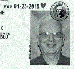
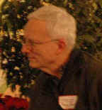

Viaggio
Orcmid Sightings
|
|
Viaggio |
- related sightings:
construction material: What's an Orcmid?
E040200: Introduction to My Classmates
NuovoDoc: Introducing System Architect Dennis Hamilton
Flickr: Orcmid's Seeings
There are occasional Orcmid sightings and it is time to compile some of them. There are two I keep saying I will put here, and I see that others can be clipped from time to time. There is no chronology to it here, and each one has a story.
|
2007 March 13. In a rare
orcmid sighting, I met some Microsoft Open Office XML folk and
others who came to an
OOX workshop in Redmond, March 13-15. I'm not in many pictures
because I am usually taking them. In this case, the hostess at the
Rockbottom Brewery took a picture of these stragglers with
Doug
Mahugh's camera. That's Doug with the moustache ,standing near
the bright reflection just right of center. On Doug's right,
also at the back, is
Wouter van Vugt a trainer from the Netherlands and one of the
presenters. Standing in front of Wouter's right shoulder is
Mauricio ("Moe") Ordonez, Doug's boss. In front of Mauricio's
right shoulder is
Julien Chable, an open-source developer from France. In front
of Julien's right shoulder is Datta from
Sonata
in Bangelore. Behind Datta's right shoulder stands bearded
Brian Jones. I'm the mouth-agape redshirt off to Brian's
right, and
Kevin Boske is somewhere between us. (It was a lot darker in
the room than it appears in this picture and I'm not sure I can
recognize Kevin in daylight.). In front of me is
Sanjay, also from Sonata. Behind my right shoulder is Leandro Jekimim from Brasil.
I'm meeting all of these folks for the first time, which may be why I
have this dazed Village of the OOX-zombies look. I had a great
time. For a bonus, Mauricio gave me some wonderful tips on on
flexing my Java bridge to ODMA into a .NET bridge using the same
native-code layer. |
||
| 2006 March 14. At the Microsoft Small Business Summit Live Event in Bellevue, Washington, on March 14, I was at a table with Elizabeth Weeks Pankey. Elizabeth made the drawing during the morning session. I was unaware of it until she showed me the pencil sketch in her 5-inch sketchpad. I requested a copy and she e-mailed me two versions that evening. The first is the original sketch, presented here. There was a second that she had taken beyond the initial sketch. Something about the spontaneity of the pencil sketch kept my attention and I asked for a good-resolution version that I could use on my site. Elizabeth also granted me permission to display it on my blog until 2007 March 13. That's a wonderful gift and I'm also happy to link to her, though she didn't ask me to. | ||
|
 When I made my renewal, I was issued a temporary paper license printed in black-and-white using a screened image (right). I saw a preview of the color image and will be pleased to have that instead.
|
||
| 2004 August 7. Orcmid as Apparition. This is a great coincidental sighting. The photograph was taken by Dave Winer at a Scoble BBQ. The "real" subjects are Jeff Sandquist and his youngest daughter, with an edge shot of Sarah Revi Sterling. This seemed like a cool Avatar to use on Channel 9 and wherever else on MSDN that my profile shows up. |
 |
|
|
|
You are navigating Orcmid's Lair |
created 2004-08-21-17:39 -0700 (pdt) by orcmid |